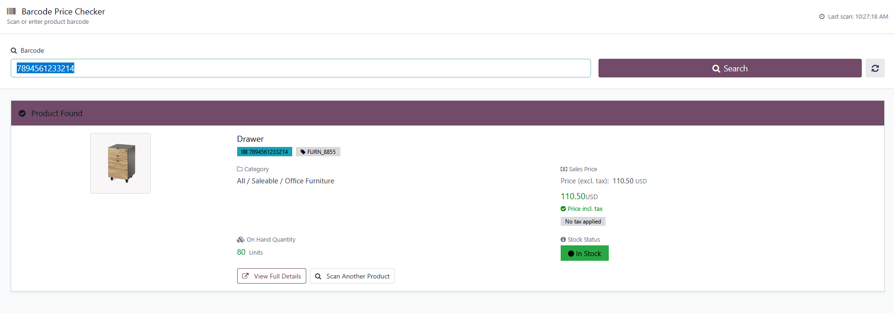
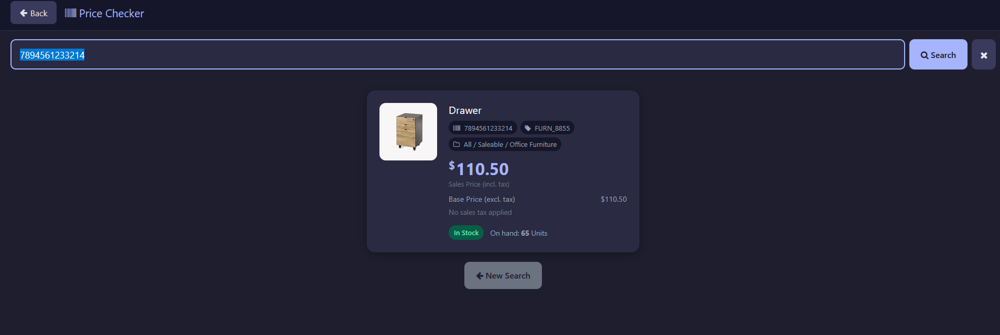
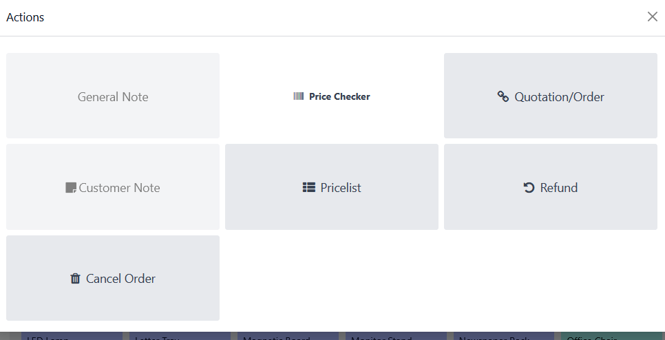
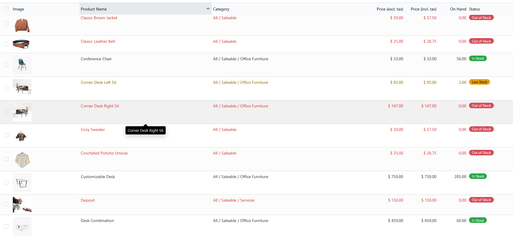
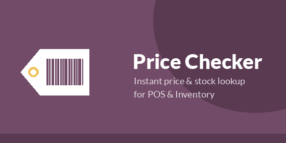

Price CheckerInstant price & stock lookup for Point of Sale and Inventory — scan a barcode, get the customer-facing price and current stock in under a second. |
🛒 Native POS IntegrationAdds a dedicated Price Checker button right in the Point of Sale control panel. Cashiers can look up any product's price and stock without leaving the active order screen. |
🔖 Barcode Scanner SupportWorks with hardware barcode scanners in both the backend (Inventory) and inside POS, using Odoo's native BarcodeReader service — plus manual barcode/name entry when a scanner isn't handy. |
💰 Tax-Inclusive PricingShows the real price a customer will pay, computed from sales taxes only — purchase taxes are excluded so the number on screen always matches the receipt. |
🏢 Company-Scoped StockOn-hand quantity reflects only the current company's warehouses — built for multi-company and multi-branch deployments where stock must never leak across companies. |
|
 Backend barcode lookup under Inventory > Price Checker. |
 The same lookup, right inside the POS interface. |
|
 One tap away from the POS Actions menu. |
 Price (excl./incl. tax) and stock status at a glance. |
